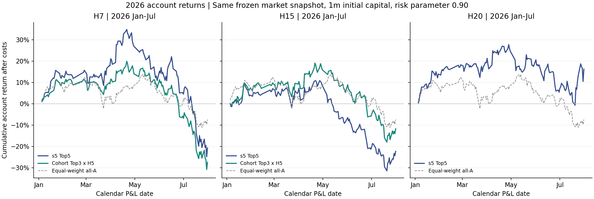

D/H7、F/H15 的真阶梯回测均改善；2026 大回撤未发现账户计算错误，真阶梯不能普遍修复。
本页是“训练目标期限与风格复验 · patience50”的派生验证。模型、五种子合成信号与行情冻结不变；仅将 s5 Top5/drop1/hold1/f100 换为已有 CohortLadderStrategy Top3×H5。100万元、risk_degree=0.90、原费用、2020-08-03～2026-07-31。新增2个正式账户，另各做1次观察性复放；没有新训练，没有扫参、晋升或生产改动。
所有结果来自已用于早停与选型的历史窗口，非独立样本外。D/F 指既有月度风格切片，F仅2024年136日；这里没有按风格切换模型的组合回测。2026年1～7月全部标为T。
| 信号 | 模型2026净算术年化 ×238/5 | s5 2026累计收益 | s5 2026最大回撤 | 回撤高点 → 低点 | 同段全A基准涨跌 |
|---|---|---|---|---|---|
| H7 | -53.88% | -20.68% | -44.27% | 2026-04-21 → 2026-07-30 | -16.49% |
| H15 | -27.85% | -22.30% | -38.16% | 2026-04-27 → 2026-07-20 | -17.32% |
| H20 | 19.32% | 16.19% | -22.22% | 2026-04-28 → 2026-07-20 | -16.51% |
模型列按信号日归属、133个完整H5标签；账户列按真实损益日归属、139个交易日，不直接相减。H7/H15模型在2026年本身也亏损；H20明显更强。H7/H15的回撤集中在4月高点至7月，既有市场下跌，也有信号选择与集中持仓的额外损失。

来源：保留的每日账户报告；曲线从2025年末净值归一至1，展示2026年累计收益，不是年化。
| 信号 | 5月累计 | 6月累计 | 7月累计 | 回撤段主要负贡献股票 | s5实际平均持有期 |
|---|---|---|---|---|---|
| H7 | -12.66% | -5.12% | -24.56% | SH603778 -8.41%; SH600714 -5.78%; SH600869 -4.31% | 2.63日 |
| H15 | -15.91% | -13.94% | -1.21% | SH603778 -8.15%; SZ300010 -6.82%; SZ002487 -3.93% | 3.08日 |
| H20 | -5.72% | -10.30% | 10.27% | SZ300010 -7.00%; SH603778 -3.91%; SZ000572 -1.93% | 3.10日 |
股票贡献是逐日“前一日持仓股数×当日价格变化÷前一日净值”的算术和，含当日卖出的股票，不等于复利回撤的可加分解。核验覆盖三组全窗：冻结数据重算模型主格、分年和分风格均对平；成交价与冻结收盘价完全一致，逐笔费用公式一致，现金、净值、毛收益及费用逐日对平（收益最大误差<5×10⁻¹⁶）。没有发现本轮错价、错扣费用或收益汇总错误。这不证明全部交易假设完全真实，也没有解决此前历史v2训练复现根因。
| 风格/模型 | 执行规则 | 天数 | CAGR | 净算术年化 ×250 | 夏普 | 风格切片回撤 | 单边年换手 |
|---|---|---|---|---|---|---|---|
| D/H7 | s5 Top5 | 1010 | 16.59% | 20.46% | 0.639 | -43.88% | 92.540 |
| D/H7 | 真阶梯 Top3×H5 | 1010 | 21.18% | 23.01% | 0.835 | -33.30% | 44.002 |
| F/H15 | s5 Top5 | 136 | 128.90% | 92.46% | 2.107 | -17.33% | 80.905 |
| F/H15 | 真阶梯 Top3×H5 | 136 | 169.18% | 108.36% | 2.525 | -17.23% | 44.499 |
同一风格内的回撤按该风格交易日串联计算，不代表一段连续日历的回撤。这里比较的是两条真实账户的同口径收益；没有把模型的五日标签年化直接当成账户CAGR。
| 账户 | 全窗CAGR | 全窗夏普 | 全窗回撤 | 2026累计收益 | 2026回撤 |
|---|---|---|---|---|---|
| H7 s5 | 22.36% | 0.771 | -44.27% | -20.68% | -44.27% |
| H7 真阶梯 | 25.53% | 0.928 | -42.31% | -27.41% | -42.31% |
| H15 s5 | 13.24% | 0.550 | -38.16% | -22.30% | -38.16% |
| H15 真阶梯 | 19.71% | 0.779 | -36.33% | -11.77% | -31.12% |
真阶梯在全窗及指定D/F切片均有改善，但H7的2026累计损失扩大，H15则收窄。因此不能把它当作2026普遍止损修复。
| 切片 | CAGR | 算术净年化 | 夏普 | 回撤 | 天数 |
|---|---|---|---|---|---|
| 2020 | 0.73% | 3.93% | 0.155 | -14.02% | 103 |
| 2021 | 89.48% | 67.83% | 2.436 | -12.54% | 243 |
| 2022 | 15.80% | 19.15% | 0.639 | -32.13% | 242 |
| 2023 | 11.85% | 13.38% | 0.638 | -18.07% | 242 |
| 2024 | 39.57% | 40.75% | 1.057 | -32.58% | 242 |
| 2025 | 58.13% | 49.06% | 1.943 | -12.07% | 243 |
| 2026 | -43.79% | -52.68% | -1.691 | -42.31% | 139 |
| 切片 | CAGR | 算术净年化 | 夏普 | 回撤 | 天数 |
|---|---|---|---|---|---|
| D | 21.18% | 23.01% | 0.835 | -33.30% | 1010 |
| F | 225.15% | 126.69% | 3.060 | -15.33% | 136 |
| T | -7.44% | -4.07% | -0.150 | -42.31% | 308 |
| 切片 | CAGR | 算术净年化 | 夏普 | 回撤 | 天数 |
|---|---|---|---|---|---|
| 2020 | -3.53% | -0.70% | -0.029 | -13.01% | 103 |
| 2021 | 39.97% | 36.93% | 1.439 | -17.12% | 243 |
| 2022 | 16.71% | 19.52% | 0.684 | -35.38% | 242 |
| 2023 | 19.14% | 19.93% | 0.903 | -15.97% | 242 |
| 2024 | 13.55% | 20.45% | 0.519 | -33.74% | 242 |
| 2025 | 53.60% | 45.81% | 1.923 | -13.11% | 243 |
| 2026 | -20.17% | -18.60% | -0.663 | -31.12% | 139 |
| 切片 | CAGR | 算术净年化 | 夏普 | 回撤 | 天数 |
|---|---|---|---|---|---|
| D | 8.78% | 11.94% | 0.451 | -37.69% | 1010 |
| F | 169.18% | 108.36% | 2.525 | -17.23% | 136 |
| T | 14.55% | 16.71% | 0.667 | -31.12% | 308 |
下表是解释性分解，所有阶段统一到250日年化和90%目标资金。A为模型头部毛收益按信号日统计；B将同一批固定本金五日收益摊到实际损益日；C使用相同头部名单与五日退出，但改为动态净值预算、允许零股、无费用且无交易限制；D/E为真实账户毛/净算术年化。B/C不是新的正式候选或可实现收益承诺。
| 阶段 | D/H7 年化 | F/H15 年化 |
|---|---|---|
| A 模型毛收益：信号日 | 28.97% | 151.20% |
| B 固定本金：损益日 | 29.52% | 140.44% |
| C 动态预算：理想撮合 | 29.33% | 127.62% |
| D 真实阶梯：毛收益 | 27.05% | 112.46% |
| E 真实阶梯：扣费净收益 | 23.01% | 108.36% |
F/H15中，信号日改为损益日归属、动态资金计算都能造成明显差距；真实成交与理想撮合仍有残差。到期卖不出的延后持仓在F切片贡献约−5.23个百分点算术年化，但这不是延迟退出的完整因果损失：补位机会、资金变化和其它成交差异尚未逐项消融。D/H7对应延后持仓贡献约−1.05个百分点。
| 模型 | 入场与模型Top3平均重合 | 完整名单一致日比例 | 向已有股票追加分层日数 | 有到期未卖余量的日数 | FIFO售出批次恰满5日比例 | 最长售出账龄 |
|---|---|---|---|---|---|---|
| H7 | 99.29% | 97.86% | 1139 | 94 | 98.49% | 13 |
| H15 | 98.71% | 96.20% | 1236 | 99 | 98.40% | 15 |
上述账龄用真实买卖单按FIFO重建，逐日股数与持仓相符。H7有两笔小于0.28元的余量在FIFO归因中分到较新批次，已完整记录，不能据此宣称存在有意义的提前退出收益。两次观察性回放与正式账户收益误差均<7×10⁻¹⁶。
本轮完整保留D/H7、F/H15、T/H20各五种子模型及其s5账户，并保留H7/H15的真阶梯派生账户；原七H数值摘要继续作为选型证据。新增平台记录仅本实验一条。旧复现、早停和独立派生入口已按用户要求清理；累计103次拟合成本不归零。本次新增拟合为0。
现有harness独立策略轨道锁定全局v2信号，无法直接接受H7/H15；本次没有伪造model_ref，也没有重开已关闭合同。按操作协议使用仓库外适配器、冻结有限派生验证计划和逐作业回执，最终登记回原实验。这一工具覆盖缺口留作后续harness改进事项。
原七H汇总 · 账户完整性核验 · 固定验证计划 · 作业回执 · 分层与回放核验 · 收益口径分解 · 延后退出明细 · 清理审计